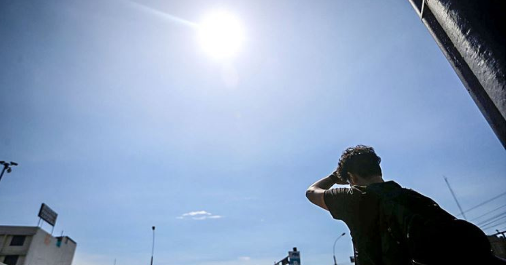

Ante este escenario climatológico, las autoridades técnicas han detallado cuáles serán las zonas geográficas específicas que se mantendrán bajo alerta, con el objetivo de que la población y las instituciones locales adopten las medidas de prevención necesarias para salvaguardar la salud pública, la agricultura y las actividades cotidianas.
De acuerdo con los pronósticos especializados del Senamhi, organismo adscrito al Ministerio del Ambiente, este comportamiento atmosférico responde a factores estacionales y a la configuración de los vientos en niveles medios de la atmósfera, los cuales propician la disipación de la nubosidad, permitiendo una mayor incidencia de la radiación solar directa sobre la superficie terrestre.
En la franja costera, el fenómeno se manifestará con brillo solar hacia el mediodía y temperaturas máximas que superarán los valores climatológicos normales para la temporada. Por su parte, en las zonas altoandinas de la sierra, el incremento térmico durante el día contrastará marcadamente con las bajas temperaturas registradas durante la madrugada, un comportamiento típico de la estación en los Andes peruanos.
Puntos clave del reporte del Senamhi:
El incremento de la temperatura diurna afectará tanto a provincias de la costa peruana como a diversas jurisdicciones de la sierra, generando condiciones de calor moderado a fuerte en horas de la tarde y altos índices de radiación UV.
Frente a este pronóstico emitido por el organismo técnico, las entidades de defensa civil y los sectores de salud han recordado a la ciudadanía la importancia de mantenerse informada a través de los canales oficiales y seguir estrictamente las recomendaciones orientadas a evitar golpes de calor, deshidratación y daños en la piel.
Entre las principales medidas sugeridas destacan el uso frecuente de protectores solares con factor de protección adecuado, sombreros de ala ancha, lentes con protección UV y ropa ligera pero que cubra la mayor parte del cuerpo. Asimismo, se aconseja evitar la exposición prolongada a los rayos solares, especialmente entre las 10:00 a.m. y las 4:00 p.m., franja horaria en la que la radiación alcanza sus picos más críticos.
En el sector agrícola, los especialistas recomiendan a los agricultores de la sierra y la costa monitorear constantemente la humedad de los suelos y los cultivos, debido a que el incremento de la temperatura diurna y la menor presencia de nubosidad pueden acelerar la evaporación y generar estrés hídrico en determinadas plantas.
El Senamhi ha ratificado que continuará monitoreando de manera constante la evolución de las condiciones atmosféricas en todo el país y emitirá avisos de actualización de manera oportuna en caso de registrarse variaciones significativas en los patrones meteorológicos. Se exhorta a la población a no replicar información de fuentes no oficiales y a consultar los reportes diarios publicados en su portal institucional y redes sociales autorizadas.